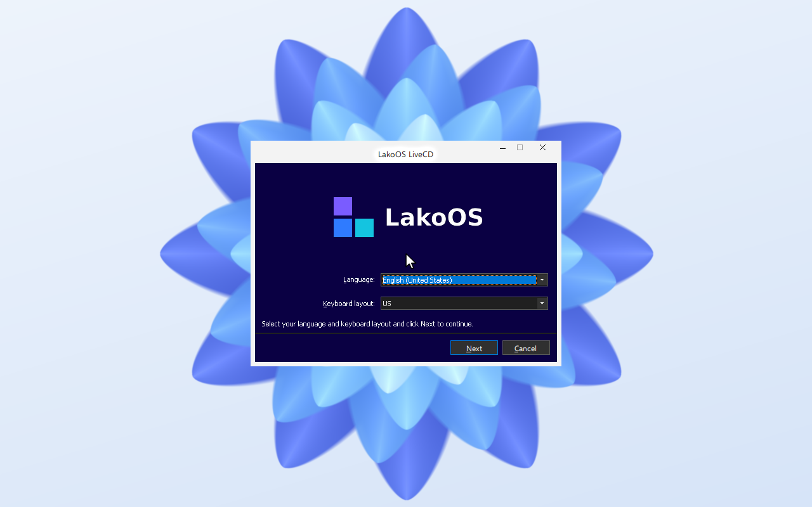
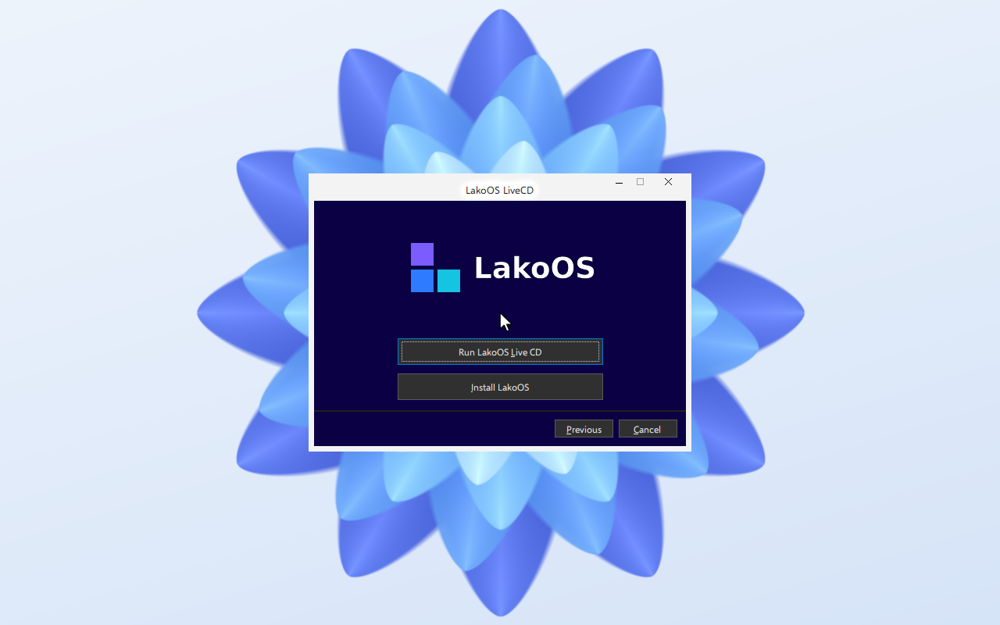
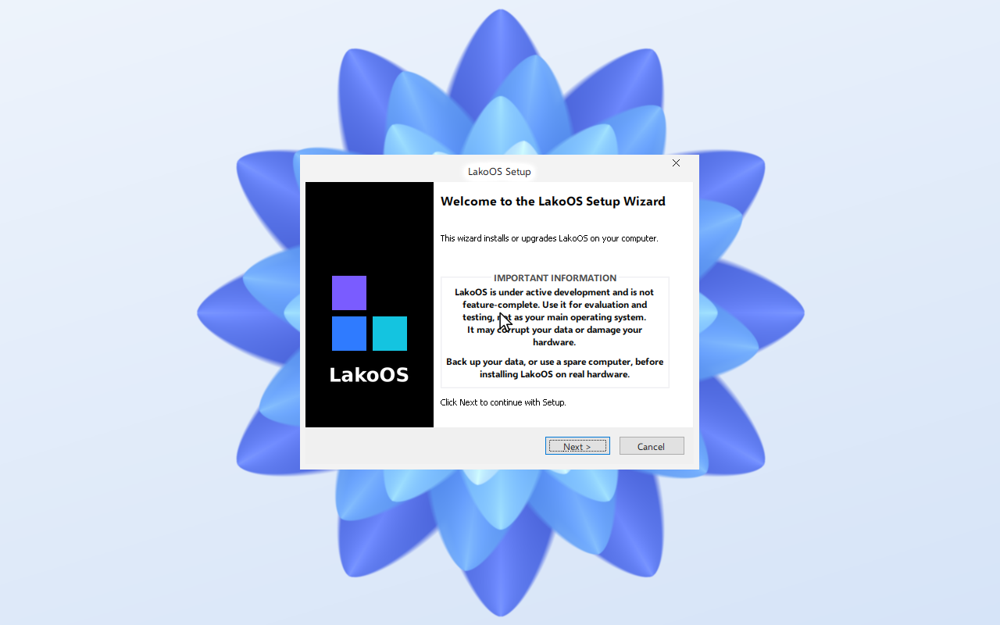
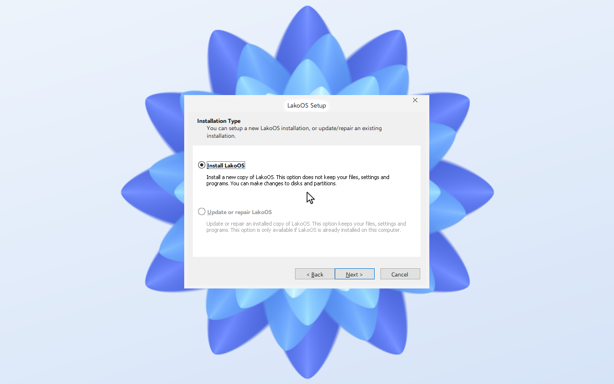
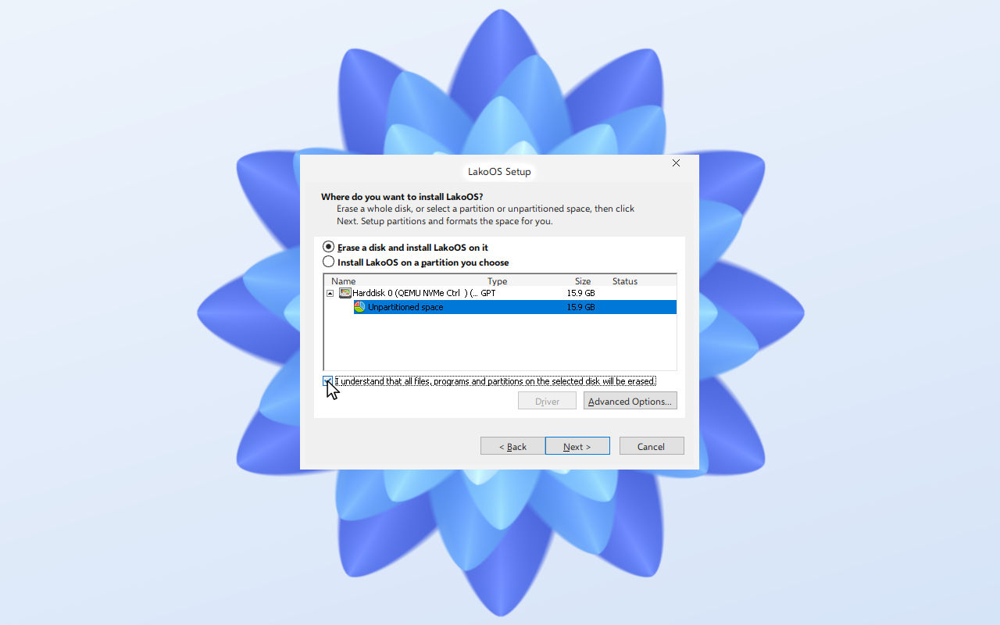
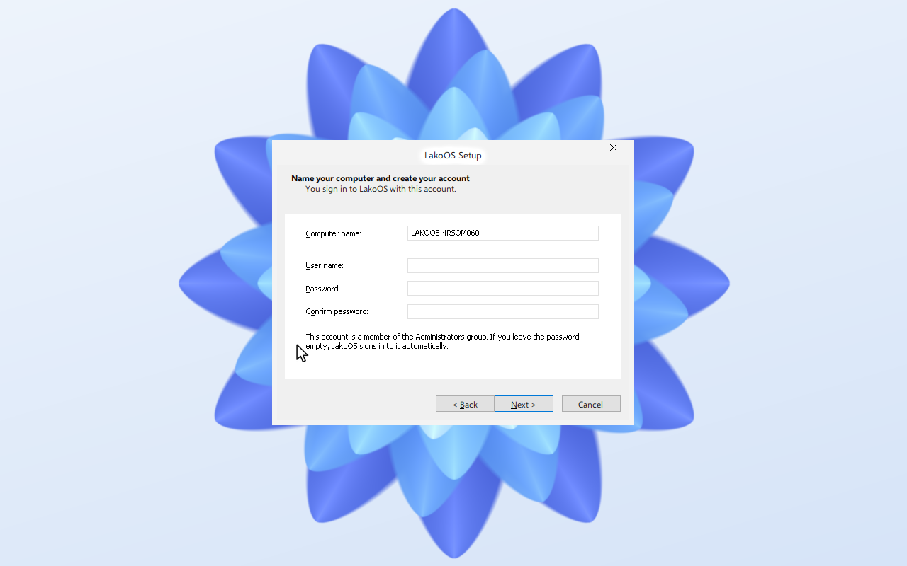
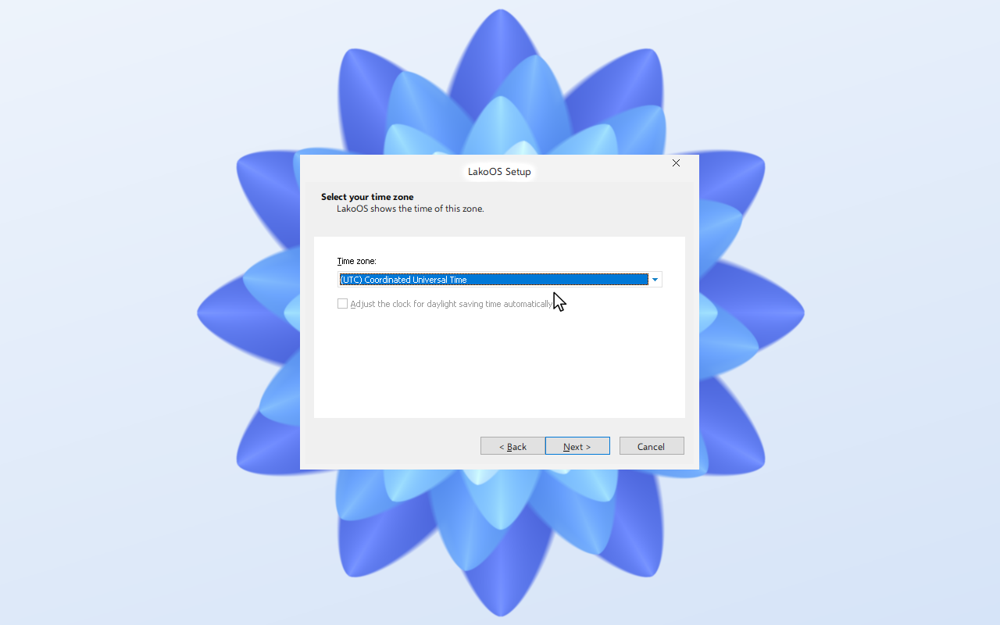
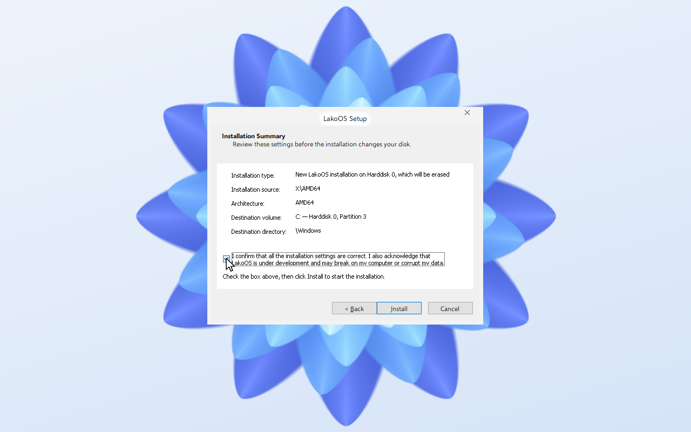
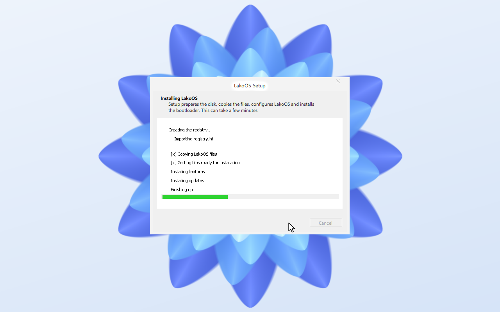
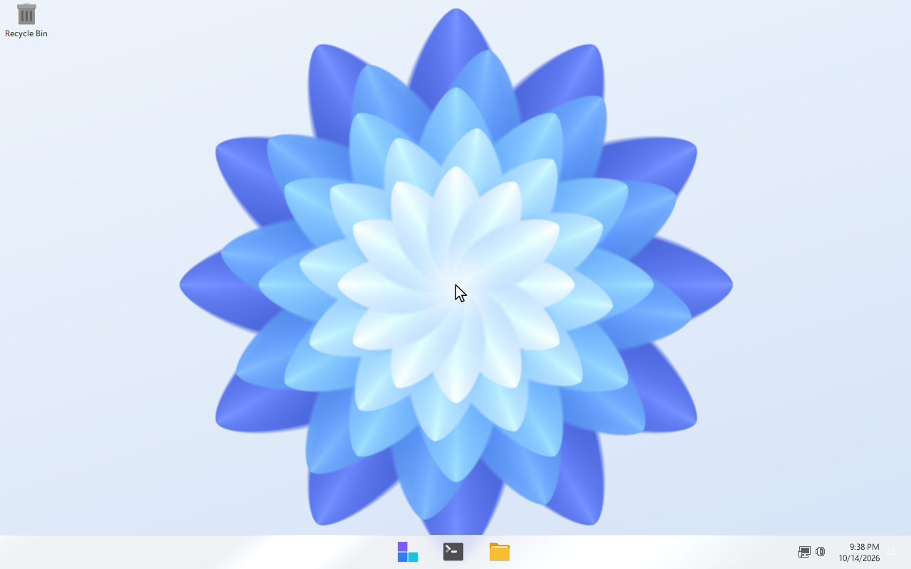

Nine screens from the setup image to the desktop. Shown in a UEFI virtual machine with an NVMe disk.
Attach the setup image and boot. Pick your language and keyboard layout.

Choose Install LakoOS, or Run Live CD to try it first.

Read the notice and continue.

Install a new copy of LakoOS.

Select the disk and confirm that it will be erased.

Set a computer name and a user. An empty password signs in automatically.

Pick your time zone.

Check the summary and confirm.

The installer lists its stages and restarts when finished.

Remove the setup image. LakoOS starts from the disk.
